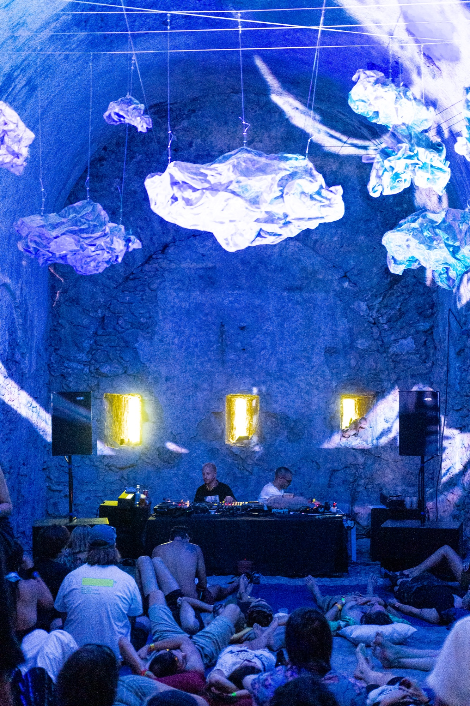
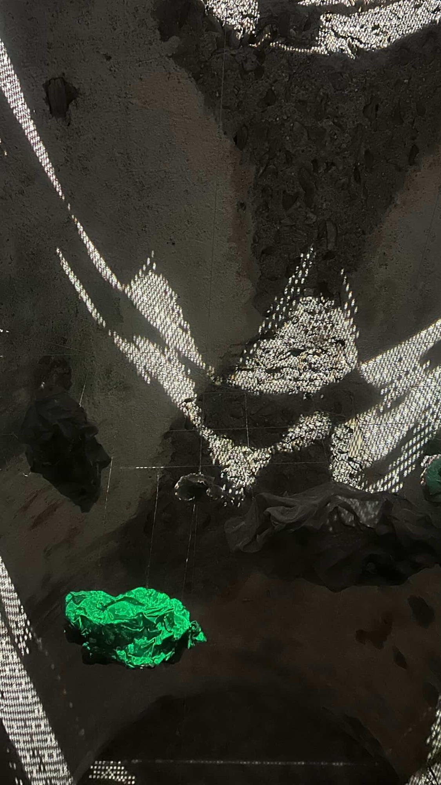

I
Accumulation
Warp Feedback Machine
The present is fed back into itself until the image no longer resembles what entered. Memory is not stored — it is metabolized.
Visual artist · Researcher · VJ
Matteo Scandola
Real-time audiovisual installations and live visuals, built from feedback, emergence and light. Verona — Paris.
la faccia triste dell’America
Suspended in space, a constellation of inorganic elements waits to be inhabited. At first the sculpture appears compact and solid, yet light passes through it. The metal mesh becomes an iridescent membrane: where the light touches it, it glows like cloud; where it passes through, it lands on the stone arch as shadow, as rock.
Messico e Nuvole surprises and disorients, inviting the gaze to lose itself among matter, light and music. Lying down, visitors let the music carry them into a liquid, dilated journey, where the perception of time slowly fades and no ending is needed.
A site-specific installation created for the Alcova stage at Komorebi Music Festival 2026, at Forte di Vinadio. The fort is undergoing a transformation: its historical function is gradually giving way to new inhabitants, to a new community. The installation sits between the material and the immaterial, between memory and transformation. Here the architecture of the past meets music, light and contemporary vision, and for a few moments the visitor can lose the boundaries of the self.



In 1915, Giacomo Balla and Fortunato Depero published the Futurist Reconstruction of the Universe, calling for a new art: abstract and dynamic, transparent and luminous, autonomous, transformable, simultaneously plastic and alive.
States of Motion is a live audiovisual instrument that processes the present through feedback, temporal displacement, and signal degradation. A live camera enters the system and is acted upon immediately — accumulated, run back through itself, distributed across screens in space.
Your body is the input. The system does the rest.
“Rebuild it with the materials of your time.”
Giacomo Balla, found by Elio Marchigiani under a cardboard flower
I
Accumulation
Warp Feedback Machine
The present is fed back into itself until the image no longer resembles what entered. Memory is not stored — it is metabolized.
II
Duration
Slitscan / Time Displacement
Every position a body has occupied, held simultaneously. Past and present occupy the same surface.
III
Degradation
Optical Flow + Compression
Only the parts of the signal that move survive. The rest decays into blocks — data corruption as the truest portrait of flux.
IV
Contour
Edge Detection + Feedback Trails
The body reduced to the line where it ends and the world begins. That line accumulates, and persists after the body has moved on.
V
Presence
Blob Composite + Time Machine
The same figure shown now and a few seconds ago, in the same frame. You are here, and you were here, and both are true at once.


My work explores how complex spatial structures can emerge from extremely simple primitives: points or agents and above all the connections between them. Rather than using surfaces or volumes, the visual language is built entirely from relationships: proximity, neighborhood, and their motion in space.
What interests me is not representing objects in space, but making relationships in space visible — showing how form can emerge purely from interaction, motion, and proximity.
Points sample a 3D texture field and are displaced by what they read. A feedback-slope-displace network introduces temporal memory — space shaped not only by the field, but by the history of the system.
Flocking behaviors — alignment, cohesion, separation. The connections, not the particles, reveal the emergent collective structure: patterns of organization and self-regulation.
Trajectories constrained by deterministic equations — chaotic but structured motion. The connected points expose the hidden geometry of the attractor over time.
Uecker nails to fix memory
Uecker nails to fix memory.
A pack of real-time visuals made for the composer Inwards.

Live visuals for the bette2rave night in Paris.


Live VJ sets
CH 07
12–13 Sep 2025 · Trento, IT
CH 08
22 Jun 2025 · Trento, IT
CH 09
12 Jul 2025 · Trento, IT
CH 10
10 May 2025 · FEELTHEF, Trento, IT

Matteo Scandola aka m.code (Verona, 1998) is a visual artist and researcher based in Paris, exploring emergence, feedback, and spatial relationships through real-time audiovisual systems.
With a background in physics, he later shifted his focus toward audiovisual art through the discovery of TouchDesigner. His work investigates how structure and complexity can emerge from interaction, motion, and accumulation through experiments with code and algorithms.
Tools — TouchDesigner · Houdini · Blender
Open to VJ sets, installations, scenography and custom real-time visuals. Tell me about the project, the place and the dates.
m.scandola1998@gmail.com